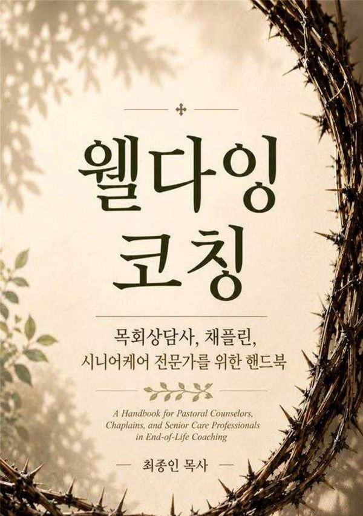

← 저서 목록으로

임종 코칭
웰다잉 코칭
목회상담사, 채플린, 시니어케어 전문가를 위한 핸드북
A Handbook for Pastoral Counselors, Chaplains, and Senior Care Professionals in End-of-Life Coaching
주제 소개
목회상담사, 채플린, 시니어케어 전문가를 위한 임종·웰다잉 코칭 핸드북입니다. 기독교 신학적 닻 위에서 전문 코칭 방법론을 접목해, 가치관 정리와 사전연명의료계획, 인생회고와 유산 만들기, 말기 전환기 및 가족체계·돌봄자 코칭, 사별 애도와 트레이너 양성까지 체계적으로 다룹니다.
목차
- 1장. 웰다잉 코칭이란?
- 2장. 코치라는 동반자: 임종코칭의 핵심역량과 윤리기준
- 3장. 노년기의 인간발달: 노인코칭을 위한 노년학적 기초
- 4장. 죽음과 임종의 이해: 죽음학과 임종과정의 현대적 모델
- 5장. 죽음을 위한 기독교 신학적 틀: 소망, 애가, 고난 속의 의미
- 6장. 코칭 대화: 개인과 가족에게 죽음을 이야기하는 소통기술
- 7장. 가치관 정리와 사전연명의료계획: 의료적 의사결정을 위한 코칭
- 8장. 유산, 의미 만들기, 인생회고: 실존적·영적 통합을 위한 코칭 도구
- 9장. 중증질환을 통과하는 코칭: 말기진단과 완화의료·호스피스로의 전환
- 10장. 가족체계와 돌봄자 코칭: 임종기 관계 역학 다루기
- 11장. 애도와 사별 코칭: 장례 이후에도 지속되는 지원
- 12장. 트레이너 양성: 웰다잉 코칭 사역 구축과 코치의 지속가능성